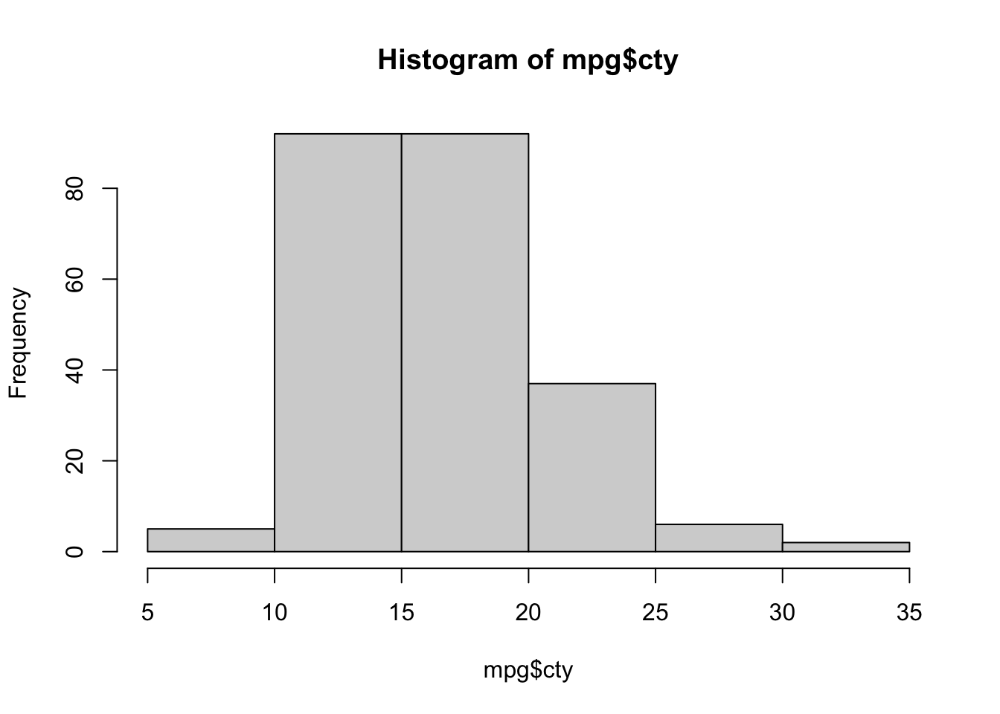
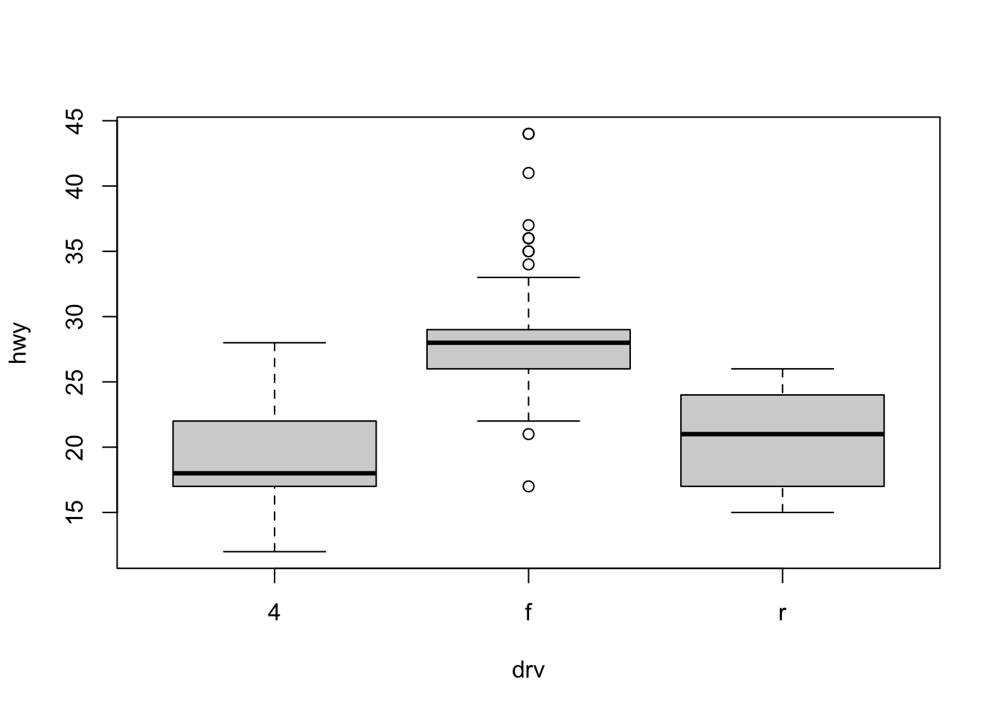
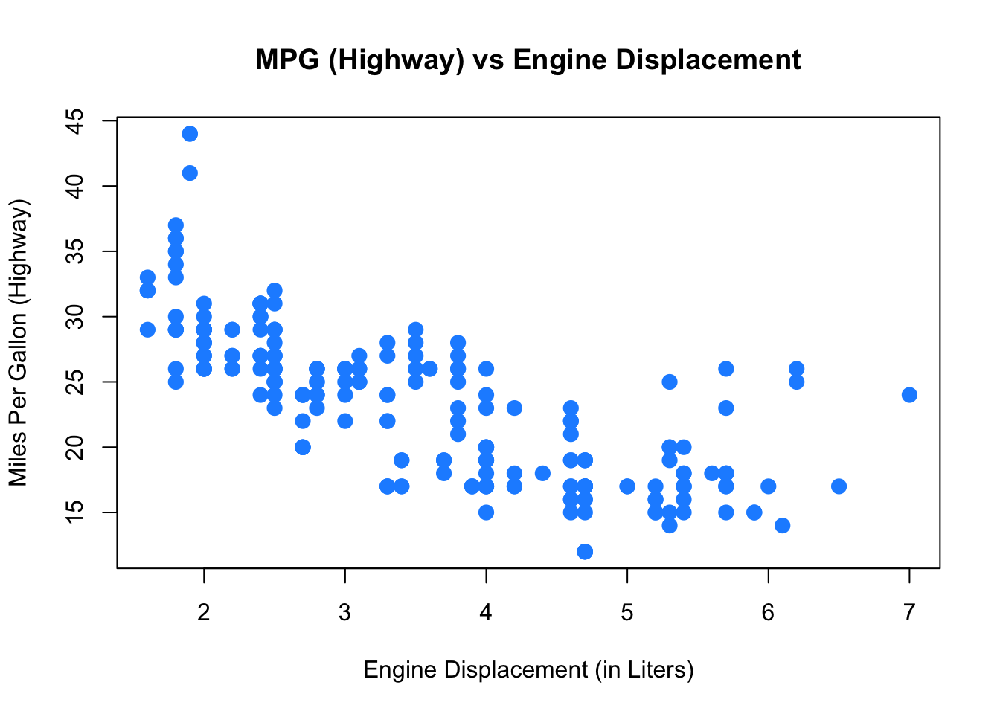
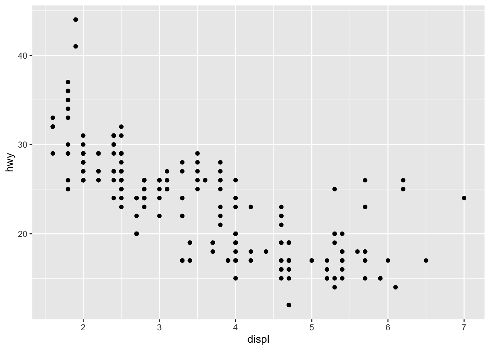
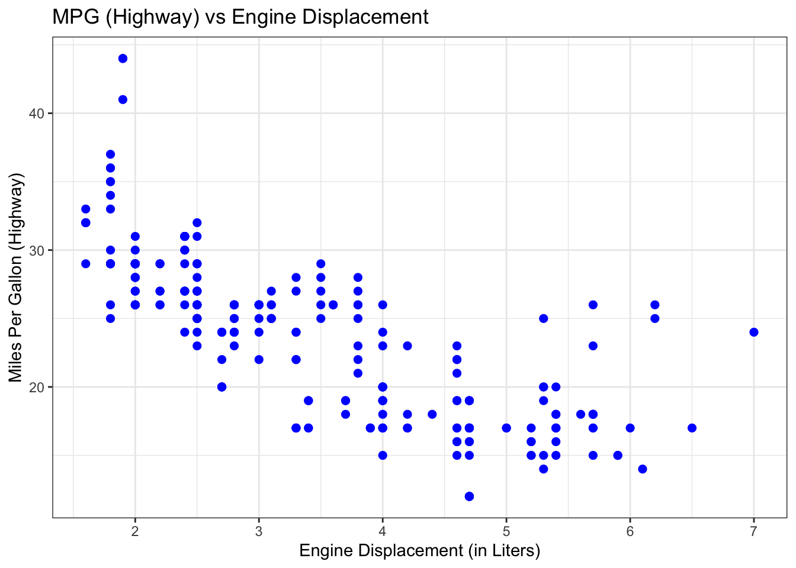
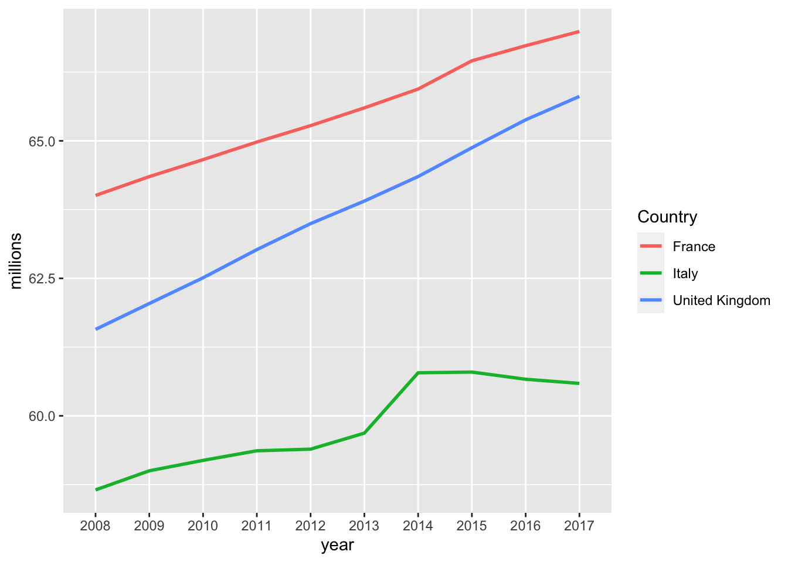
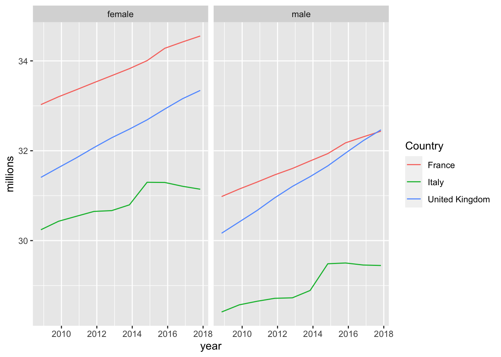
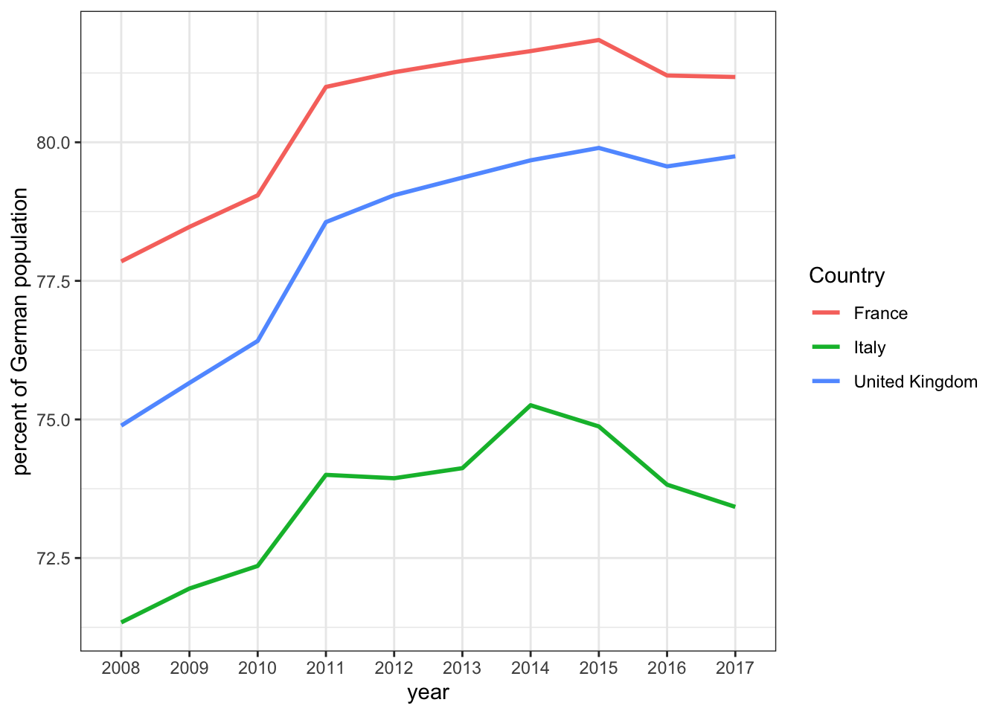

Chapter 2 Working With Data
In this chapter we will first learn some basic concepts that help summarizing data. Then, we will tackle a real-world task and read, clean, and summarize data from the web.
2.1 Summary Statistics
R has built in functions for a large number of summary statistics. For numeric variables, we can summarize data by looking at their center and spread, for example.
# for the mpg dataset, we load:
library(ggplot2)Central Tendency
Suppose we want to know the mean and median of all the values stored in the data.frame column mpg$cty:
| Measure | R |
Result |
|---|---|---|
| Mean | mean(mpg$cty) |
16.8589744 |
| Median | median(mpg$cty) |
17 |
Spread
How do the values in that column vary? How far spread out are they?
| Measure | R |
Result |
|---|---|---|
| Variance | var(mpg$cty) |
18.1130736 |
| Standard Deviation | sd(mpg$cty) |
4.2559457 |
| IQR | IQR(mpg$cty) |
5 |
| Minimum | min(mpg$cty) |
9 |
| Maximum | max(mpg$cty) |
35 |
| Range | range(mpg$cty) |
9, 35 |
Categorical
For categorical variables, counts and percentages can be used for summary.
table(mpg$drv)#OUT>
#OUT> 4 f r
#OUT> 103 106 25table(mpg$drv) / nrow(mpg)#OUT>
#OUT> 4 f r
#OUT> 0.4401709 0.4529915 0.10683762.2 Plotting
Now that we have some data to work with, and we have learned about the data at the most basic level, our next tasks will be to visualize it. Often, a proper visualization can illuminate features of the data that can inform further analysis.
We will look at four methods of visualizing data by using the basic plot facilities built-in with R:
- Histograms
- Barplots
- Boxplots
- Scatterplots
2.2.1 Histograms
When visualizing a single numerical variable, a histogram is useful. It summarizes the distribution of values in a vector. In R you create one using the hist() function:
hist(mpg$cty)
The histogram function has a number of parameters which can be changed to make our plot look much nicer. Use the ? operator to read the documentation for the hist() to see a full list of these parameters.
hist(mpg$cty,
xlab = "Miles Per Gallon (City)",
main = "Histogram of MPG (City)", # main title
breaks = 12, # how many breaks?
col = "red",
border = "blue")Importantly, you should always be sure to label your axes and give the plot a title. The argument breaks is specific to hist(). Entering an integer will give a suggestion to R for how many bars to use for the histogram. By default R will attempt to intelligently guess a good number of breaks, but as we can see here, it is sometimes useful to modify this yourself.
2.2.2 Barplots
Somewhat similar to a histogram, a barplot can provide a visual summary of a categorical variable, or a numeric variable with a finite number of values, like a ranking from 1 to 10.
barplot(table(mpg$drv))barplot(table(mpg$drv),
xlab = "Drivetrain (f = FWD, r = RWD, 4 = 4WD)",
ylab = "Frequency",
main = "Drivetrains",
col = "dodgerblue",
border = "darkorange")2.2.3 Boxplots
To visualize the relationship between a numerical and categorical variable, once could use a boxplot. In the mpg dataset, the drv variable takes a small, finite number of values. A car can only be front wheel drive, 4 wheel drive, or rear wheel drive.
unique(mpg$drv)#OUT> [1] "f" "4" "r"First note that we can use a single boxplot as an alternative to a histogram for visualizing a single numerical variable. To do so in R, we use the boxplot() function. The box shows the interquartile range, the solid line in the middle is the value of the median, the wiskers show 1.5 times the interquartile range, and the dots are outliers.
boxplot(mpg$hwy)
However, more often we will use boxplots to compare a numerical variable for different values of a categorical variable.
boxplot(hwy ~ drv, data = mpg)
Here used the boxplot() command to create side-by-side boxplots. However, since we are now dealing with two variables, the syntax has changed. The R syntax hwy ~ drv, data = mpg reads “Plot the hwy variable against the drv variable using the dataset mpg.” We see the use of a ~ (which specifies a formula) and also a data = argument. This will be a syntax that is common to many functions we will use in this course.
boxplot(hwy ~ drv, data = mpg,
xlab = "Drivetrain (f = FWD, r = RWD, 4 = 4WD)",
ylab = "Miles Per Gallon (Highway)",
main = "MPG (Highway) vs Drivetrain",
pch = 20,
cex = 2,
col = "darkorange",
border = "dodgerblue")Again, boxplot() has a number of additional arguments which have the ability to make our plot more visually appealing.
2.2.4 Scatterplots
Lastly, to visualize the relationship between two numeric variables we will use a scatterplot. This can be done with the plot() function and the ~ syntax we just used with a boxplot. (The function plot() can also be used more generally; see the documentation for details.)
plot(hwy ~ displ, data = mpg)plot(hwy ~ displ, data = mpg,
xlab = "Engine Displacement (in Liters)",
ylab = "Miles Per Gallon (Highway)",
main = "MPG (Highway) vs Engine Displacement",
pch = 20,
cex = 2,
col = "dodgerblue")
2.2.5 ggplot
All of the above plots could also have been generated using the ggplot function from the already loaded ggplot2 package. Which function you use is up to you, but sometimes a plot is easier to build in base R (like in the boxplot example maybe), sometimes the other way around.
ggplot(data = mpg,mapping = aes(x=displ,y=hwy)) + geom_point()
ggplot is impossible to describe in brief terms, so please look at the package’s website which provides excellent guidance. We will from time to time use ggplot in this book, so you could familiarize yourself with it. Let’s quickly demonstrate how one could further customize that first plot:
ggplot(data = mpg, mapping = aes(x=displ,y=hwy)) + # ggplot() makes base plot
geom_point(color="blue",size=2) + # how to show x and y?
scale_y_continuous(name="Miles Per Gallon (Highway)") + # name of y axis
scale_x_continuous(name="Engine Displacement (in Liters)") + # x axis
theme_bw() + # change the background
ggtitle("MPG (Highway) vs Engine Displacement") # add a title
If you want to see ggplot in action, you could start with this and then look at that very nice tutorial? It’s fun!
2.3 Summarizing Two Variables
We often are interested in how two variables are related to each other. The core concepts here are covariance and correlation. Let’s generate some data on x and y and plot them against each other:
Figure 2.1: How are \(x\) and \(y\) related?
Taking as example the data in this plot, the concepts covariance and correlation relate to the following type of question:
Given we observe value of something like \(x=2\), say, can we expect a high or a low value of \(y\), on average? Something like \(y=2\) or rather something like \(y=-2\)?
The answer to this type of question can be addressed by computing the covariance of both variables:
cov(x,y) #OUT> [1] 1.041195Here, this gives a positive number, 1.04, indicating that as one variable lies above it’s average, the other one does as well. In other words, it indicates a positive relationship. What is less clear, however, how to interpret the magnitude of 1.04. Is that a strong or a weak positive association?
In fact, we cannot tell. This is because the covariance is measured in the same units as the data, and those units often differ between both variables. There is a better measure available to us though, the correlation, which is obtained by standardizing each variable. By standardizing a variable \(x\) one means to divide \(x\) by its standard deviation \(\sigma_x\):
\[ z = \frac{x}{\sigma_x} \]
The correlation coefficient between \(x\) and \(y\), commonly denoted \(r_{x,y}\), is then defined as
\[ r_{x,y} = \frac{cov(x,y)}{\sigma_x \sigma_y}, \]
and we get rid of the units problem. In R, you can call directly
cor(x,y)#OUT> [1] 0.9142495Now this is better. Given that the correlation has to lie in \([-1,1]\), a value of 0.91 is indicative of a rather strong positive relationship for the data in figure 2.1
Note that \(x,y\) being drawn from a continuous distribution (they are joint normally distributed) had no implication for covariance and correlation: We can compute those measures also for discrete random variables (like the throws of two dice, as you will see in one of our tutorials).
2.4 The tidyverse
Hadley Wickham is the author of R packages ggplot2 and also of dplyr (and also a myriad of others). With ggplot2 he introduced what is called the grammar of graphics (hence, gg) to R. Grammar in the sense that there are nouns and verbs and a syntax, i.e. rules of how nouns and verbs are to be put together to construct an understandable sentence. He has extended the grammar idea into various other packages. The tidyverse package is a collection of those packages.
tidy data is data where:
- Each variable is a column
- Each observation is a row
- Each value is a cell
Fair enough, you might say, that is a regular spreadsheet. And you are right! However, data comes to us not tidy most of the times, and we first need to clean, or tidy, it up. Once it’s in tidy format, we can use the tools in the tidyverse with great efficiency to analyse the data and stop worrying about which tool to use.
2.4.1 Reading .csv data in the tidy way
We could have used the read_csv() function from the readr package to read our example dataset from the previous chapter. The readr function read_csv() has a number of advantages over the built-in read.csv. For example, it is much faster reading larger data. It also uses the tibble package to read the data as a tibble. A tibble is simply a data frame that prints with sanity. Notice in the output below that we are given additional information such as dimension and variable type.
library(readr) # you need `install.packages("readr")` once!
path = system.file(package="ScPoEconometrics","datasets","example-data.csv")
example_data_from_disk = read_csv(path)2.4.2 Tidy data.frames are tibbles
Let’s grab some data from the ggplot2 package:
data(mpg,package = "ggplot2") # load dataset `mpg` from `ggplot2` package
head(mpg, n = 10)#OUT> # A tibble: 10 x 11
#OUT> manufacturer model displ year cyl trans drv cty hwy fl cla…
#OUT> <chr> <chr> <dbl> <int> <int> <chr> <chr> <int> <int> <chr> <ch>
#OUT> 1 audi a4 1.8 1999 4 auto… f 18 29 p com…
#OUT> 2 audi a4 1.8 1999 4 manu… f 21 29 p com…
#OUT> 3 audi a4 2 2008 4 manu… f 20 31 p com…
#OUT> 4 audi a4 2 2008 4 auto… f 21 30 p com…
#OUT> 5 audi a4 2.8 1999 6 auto… f 16 26 p com…
#OUT> 6 audi a4 2.8 1999 6 manu… f 18 26 p com…
#OUT> 7 audi a4 3.1 2008 6 auto… f 18 27 p com…
#OUT> 8 audi a4 q… 1.8 1999 4 manu… 4 18 26 p com…
#OUT> 9 audi a4 q… 1.8 1999 4 auto… 4 16 25 p com…
#OUT> 10 audi a4 q… 2 2008 4 manu… 4 20 28 p com…The function head() will display the first n observations of the data frame, as we have seen. The head() function was more useful before tibbles. Notice that mpg is a tibble already, so the output from head() indicates there are only 10 observations. Note that this applies to head(mpg, n = 10) and not mpg itself. Also note that tibbles print a limited number of rows and columns by default. The last line of the printed output indicates with rows and columns were omitted.
mpg#OUT> # A tibble: 234 x 11
#OUT> manufacturer model displ year cyl trans drv cty hwy fl cla…
#OUT> <chr> <chr> <dbl> <int> <int> <chr> <chr> <int> <int> <chr> <ch>
#OUT> 1 audi a4 1.8 1999 4 auto… f 18 29 p com…
#OUT> 2 audi a4 1.8 1999 4 manu… f 21 29 p com…
#OUT> 3 audi a4 2 2008 4 manu… f 20 31 p com…
#OUT> 4 audi a4 2 2008 4 auto… f 21 30 p com…
#OUT> 5 audi a4 2.8 1999 6 auto… f 16 26 p com…
#OUT> 6 audi a4 2.8 1999 6 manu… f 18 26 p com…
#OUT> 7 audi a4 3.1 2008 6 auto… f 18 27 p com…
#OUT> 8 audi a4 q… 1.8 1999 4 manu… 4 18 26 p com…
#OUT> 9 audi a4 q… 1.8 1999 4 auto… 4 16 25 p com…
#OUT> 10 audi a4 q… 2 2008 4 manu… 4 20 28 p com…
#OUT> # ... with 224 more rowsLet’s look at str as well to get familiar with the content of the data:
str(mpg)#OUT> Classes 'tbl_df', 'tbl' and 'data.frame': 234 obs. of 11 variables:
#OUT> $ manufacturer: chr "audi" "audi" "audi" "audi" ...
#OUT> $ model : chr "a4" "a4" "a4" "a4" ...
#OUT> $ displ : num 1.8 1.8 2 2 2.8 2.8 3.1 1.8 1.8 2 ...
#OUT> $ year : int 1999 1999 2008 2008 1999 1999 2008 1999 1999 2008 ...
#OUT> $ cyl : int 4 4 4 4 6 6 6 4 4 4 ...
#OUT> $ trans : chr "auto(l5)" "manual(m5)" "manual(m6)" "auto(av)" ...
#OUT> $ drv : chr "f" "f" "f" "f" ...
#OUT> $ cty : int 18 21 20 21 16 18 18 18 16 20 ...
#OUT> $ hwy : int 29 29 31 30 26 26 27 26 25 28 ...
#OUT> $ fl : chr "p" "p" "p" "p" ...
#OUT> $ class : chr "compact" "compact" "compact" "compact" ...In this dataset an observation is for a particular model-year of a car, and the variables describe attributes of the car, for example its highway fuel efficiency.
To understand more about the data set, we use the ? operator to pull up the documentation for the data.
?mpgWorking with tibbles is mostly the same as working with plain data.frames:
names(mpg)#OUT> [1] "manufacturer" "model" "displ" "year"
#OUT> [5] "cyl" "trans" "drv" "cty"
#OUT> [9] "hwy" "fl" "class"mpg$year#OUT> [1] 1999 1999 2008 2008 1999 1999 2008 1999 1999 2008 2008 1999 1999 2008
#OUT> [15] 2008 1999 2008 2008 2008 2008 2008 1999 2008 1999 1999 2008 2008 2008
#OUT> [29] 2008 2008 1999 1999 1999 2008 1999 2008 2008 1999 1999 1999 1999 2008
#OUT> [43] 2008 2008 1999 1999 2008 2008 2008 2008 1999 1999 2008 2008 2008 1999
#OUT> [57] 1999 1999 2008 2008 2008 1999 2008 1999 2008 2008 2008 2008 2008 2008
#OUT> [71] 1999 1999 2008 1999 1999 1999 2008 1999 1999 1999 2008 2008 1999 1999
#OUT> [85] 1999 1999 1999 2008 1999 2008 1999 1999 2008 2008 1999 1999 2008 2008
#OUT> [99] 2008 1999 1999 1999 1999 1999 2008 2008 2008 2008 1999 1999 2008 2008
#OUT> [113] 1999 1999 2008 1999 1999 2008 2008 2008 2008 2008 2008 2008 1999 1999
#OUT> [127] 2008 2008 2008 2008 1999 2008 2008 1999 1999 1999 2008 1999 2008 2008
#OUT> [141] 1999 1999 1999 2008 2008 2008 2008 1999 1999 2008 1999 1999 2008 2008
#OUT> [155] 1999 1999 1999 2008 2008 1999 1999 2008 2008 2008 2008 1999 1999 1999
#OUT> [169] 1999 2008 2008 2008 2008 1999 1999 1999 1999 2008 2008 1999 1999 2008
#OUT> [183] 2008 1999 1999 2008 1999 1999 2008 2008 1999 1999 2008 1999 1999 1999
#OUT> [197] 2008 2008 1999 2008 1999 1999 2008 1999 1999 2008 2008 1999 1999 2008
#OUT> [211] 2008 1999 1999 1999 1999 2008 2008 2008 2008 1999 1999 1999 1999 1999
#OUT> [225] 1999 2008 2008 1999 1999 2008 2008 1999 1999 2008mpg$hwy#OUT> [1] 29 29 31 30 26 26 27 26 25 28 27 25 25 25 25 24 25 23 20 15 20 17 17
#OUT> [24] 26 23 26 25 24 19 14 15 17 27 30 26 29 26 24 24 22 22 24 24 17 22 21
#OUT> [47] 23 23 19 18 17 17 19 19 12 17 15 17 17 12 17 16 18 15 16 12 17 17 16
#OUT> [70] 12 15 16 17 15 17 17 18 17 19 17 19 19 17 17 17 16 16 17 15 17 26 25
#OUT> [93] 26 24 21 22 23 22 20 33 32 32 29 32 34 36 36 29 26 27 30 31 26 26 28
#OUT> [116] 26 29 28 27 24 24 24 22 19 20 17 12 19 18 14 15 18 18 15 17 16 18 17
#OUT> [139] 19 19 17 29 27 31 32 27 26 26 25 25 17 17 20 18 26 26 27 28 25 25 24
#OUT> [162] 27 25 26 23 26 26 26 26 25 27 25 27 20 20 19 17 20 17 29 27 31 31 26
#OUT> [185] 26 28 27 29 31 31 26 26 27 30 33 35 37 35 15 18 20 20 22 17 19 18 20
#OUT> [208] 29 26 29 29 24 44 29 26 29 29 29 29 23 24 44 41 29 26 28 29 29 29 28
#OUT> [231] 29 26 26 26Subsetting is also similar to dataframe. Here, we find fuel efficient vehicles earning over 35 miles per gallon and only display manufacturer, model and year.
# mpg[row condition, col condition]
mpg[mpg$hwy > 35, c("manufacturer", "model", "year")]#OUT> # A tibble: 6 x 3
#OUT> manufacturer model year
#OUT> <chr> <chr> <int>
#OUT> 1 honda civic 2008
#OUT> 2 honda civic 2008
#OUT> 3 toyota corolla 2008
#OUT> 4 volkswagen jetta 1999
#OUT> 5 volkswagen new beetle 1999
#OUT> 6 volkswagen new beetle 1999An alternative would be to use the subset() function, which has a much more readable syntax.
subset(mpg, subset = hwy > 35, select = c("manufacturer", "model", "year"))Lastly, and most tidy, we could use the filter and select functions from the dplyr package which introduces the pipe operator f(x) %>% g(z) from the magrittr package. This operator takes the output of the first command, for example y = f(x), and passes it as the first argument to the next function, i.e. we’d obtain g(y,z) here.2
library(dplyr)
mpg %>%
filter(hwy > 35) %>%
select(manufacturer, model, year)#OUT> # A tibble: 6 x 3
#OUT> manufacturer model year
#OUT> <chr> <chr> <int>
#OUT> 1 honda civic 2008
#OUT> 2 honda civic 2008
#OUT> 3 toyota corolla 2008
#OUT> 4 volkswagen jetta 1999
#OUT> 5 volkswagen new beetle 1999
#OUT> 6 volkswagen new beetle 1999Note that the above syntax is equivalent to the following pipe-free command (which is much harder to read!):
library(dplyr)
select(filter(mpg, hwy > 35), manufacturer, model, year)#OUT> # A tibble: 6 x 3
#OUT> manufacturer model year
#OUT> <chr> <chr> <int>
#OUT> 1 honda civic 2008
#OUT> 2 honda civic 2008
#OUT> 3 toyota corolla 2008
#OUT> 4 volkswagen jetta 1999
#OUT> 5 volkswagen new beetle 1999
#OUT> 6 volkswagen new beetle 1999All three approaches produce the same results. Which you use will be largely based on a given situation as well as your preference.
2.4.2.1 Task 1
- Make sure to have the
mpgdataset loaded by typingdata(mpg)(andlibrary(ggplot2)if you haven’t!). Use thetablefunction to find out how many cars were built by mercury? - What is the average year the audi’s were built in this dataset? Use the function
meanon the subset of columnyearthat corresponds toaudi. (Be careful: subsetting atibblereturns atibble(and not a vector)!. so get theyearcolumn after you have subset thetibble.) - Use the
dplyrpiping syntax from above first withgroup_byand then withsummarise(newvar=your_expression)to find the meanyearby all manufacturers (i.e. same as previous task, but for all manufacturers. don’t write a loop!).
2.4.3 Tidy Example: Importing Non-Tidy Excel Data
The data we will look at is from Eurostat on demography and migration. You should download the data yourself (click on previous link, then drill down to database by themes > Population and social conditions > Demograph and migration > Population change - Demographic balance and crude rates at national level (demo_gind)).
Once downloaded, we can read the data with the function read_excel from the package readxl, again part of the tidyverse suite.
It’s important to know how the data is organized in the spreadsheet. Open the file with Excel to see:
- There is a heading which we don’t need.
- There are 5 rows with info that we don’t need.
- There is one table per variable (total population, males, females, etc)
- Each table has one row for each country, and one column for each year.
- As such, this data is not tidy.
Now we will read the first chunk of data, from the first table: total population:
library(readxl) # load the library
# Notice that if you installed the R package of this book,
# you have the .xls data file already at
# `system.file(package="ScPoEconometrics",
# "datasets","demo_gind.xls")`
# otherwise:
# * download the file to your computer
# * change the argument `path` to where you downloaded it
# you may want to change your working directory with `setwd("your/directory")
# or in RStudio by clicking Session > Set Working Directory
# total population in raw format
tot_pop_raw = read_excel(
path = system.file(package="ScPoEconometrics",
"datasets","demo_gind.xls"),
sheet="Data", # which sheet
range="A9:K68") # which excel cell range to read
names(tot_pop_raw)[1] <- "Country" # lets rename the first column
tot_pop_raw#OUT> # A tibble: 59 x 11
#OUT> Country `2008` `2009` `2010` `2011` `2012` `2013` `2014` `2015` `2016`
#OUT> <chr> <chr> <chr> <chr> <chr> <chr> <chr> <chr> <chr> <chr>
#OUT> 1 Europe… 50029… 50209… 50317… 50296… 50404… 50516… 50701… 50854… 51027…
#OUT> 2 Europe… 43872… 44004… 44066… 43994… 44055… 44125… 44266… 44366… 44489…
#OUT> 3 Europe… 49598… 49778… 49886… 49867… 49977… 50090… 50276… 50431… 50608…
#OUT> 4 Euro a… 33309… 33447… 33526… 33457… 33528… 33604… 33754… 33856… 33988…
#OUT> 5 Euro a… 32988… 33128… 33212… 33152… 33228… 33307… 33459… 33563… 33699…
#OUT> 6 Belgium 10666… 10753… 10839… 11000… 11075… 11137… 11180… 11237… 11311…
#OUT> 7 Bulgar… 75180… 74671… 74217… 73694… 73272… 72845… 72456… 72021… 71537…
#OUT> 8 Czech … 10343… 10425… 10462… 10486… 10505… 10516… 10512… 10538… 10553…
#OUT> 9 Denmark 54757… 55114… 55347… 55606… 55805… 56026… 56272… 56597… 57072…
#OUT> 10 German… 82217… 82002… 81802… 80222… 80327… 80523… 80767… 81197… 82175…
#OUT> # ... with 49 more rows, and 1 more variable: `2017` <chr>This shows a tibble, which we encountered just above. The column names are Country,2008,2009,..., and the rows are numbered 1,2,3,.... Notice, in particular, that all columns seem to be of type <chr>, i.e. characters - a string, not a number! We’ll have to fix that, as this is clearly numeric data.
2.4.3.1 tidyr
In the previous tibble, each year is a column name (like 2008) instead of all years being collected in one column year. We really would like to have several rows for each Country, one row per year. We want to gather() all years into a new column to tidy this up - and here is how:
- specify which columns are to be gathered: in our case, all years (note that
paste(2008:2017)produces a vector like["2008", "2009", "2010",...]) - say what those columns should be gathered into, i.e. what is the key for those values: we’ll call it
year. - Finally, what is the name of the new resulting column, containing the value from each cell: let’s call it
counts.
library(tidyr) # for the gather function
tot_pop = gather(tot_pop_raw, paste(2008:2017),key="year", value = "counts")
tot_pop#OUT> # A tibble: 590 x 3
#OUT> Country year counts
#OUT> <chr> <chr> <chr>
#OUT> 1 European Union (current composition) 2008 500297033
#OUT> 2 European Union (without United Kingdom) 2008 438725386
#OUT> 3 European Union (before the accession of Croatia) 2008 495985066
#OUT> 4 Euro area (19 countries) 2008 333096775
#OUT> 5 Euro area (18 countries) 2008 329884170
#OUT> 6 Belgium 2008 10666866
#OUT> 7 Bulgaria 2008 7518002
#OUT> 8 Czech Republic 2008 10343422
#OUT> 9 Denmark 2008 5475791
#OUT> 10 Germany (until 1990 former territory of the FRG) 2008 82217837
#OUT> # ... with 580 more rowsThat’s better! However, counts is still chr! Let’s convert it to a number:
tot_pop$counts = as.integer(tot_pop$counts)#OUT> Warning: NAs introduced by coerciontot_pop#OUT> # A tibble: 590 x 3
#OUT> Country year counts
#OUT> <chr> <chr> <int>
#OUT> 1 European Union (current composition) 2008 500297033
#OUT> 2 European Union (without United Kingdom) 2008 438725386
#OUT> 3 European Union (before the accession of Croatia) 2008 495985066
#OUT> 4 Euro area (19 countries) 2008 333096775
#OUT> 5 Euro area (18 countries) 2008 329884170
#OUT> 6 Belgium 2008 10666866
#OUT> 7 Bulgaria 2008 7518002
#OUT> 8 Czech Republic 2008 10343422
#OUT> 9 Denmark 2008 5475791
#OUT> 10 Germany (until 1990 former territory of the FRG) 2008 82217837
#OUT> # ... with 580 more rowsNow you can see that column counts is indeed int, i.e. an integer number, and we are fine. The Warning: NAs introduced by coercion means that R converted some values to NA, because it couldn’t convert them into numeric. More below!
2.4.3.2 dplyr
The transform chapter of Hadley Wickham’s book is a great place to read up more on using
dplyr.
With dplyr you can do the following operations on data.frames and tibbles:
- Choose observations based on a certain value (i.e. subset):
filter() - Reorder rows:
arrange() - Select variables by name:
select() - Create new variables out of existing ones:
mutate() - Summarise variables:
summarise()
All of those verbs can be used with group_by(), where we apply the respective operation on a group of the dataframe/tibble. For example, on our tot_pop tibble we will now
- filter
- mutate
- and plot the resulting values
Let’s get a plot of the populations of France, the UK and Italy over time, in terms of millions of people. We will make use of the piping syntax of dplyr which we introduced just above.
library(dplyr) # for %>%, filter, mutate, ...
# 1. take the data.frame `tot_pop`
tot_pop %>%
# 2. pipe it into the filter function
# filter on Country being one of "France","United Kingdom" or "Italy"
filter(Country %in% c("France","United Kingdom","Italy")) %>%
# 3. pipe the result into the mutate function
# create a new column called millions
mutate(millions = counts / 1e6) %>%
# 4. pipe the result into ggplot to make a plot
ggplot(mapping = aes(x=year,y=millions,color=Country,group=Country)) + geom_line(size=1)
Arrange a tibble
- What are the top/bottom 5 most populated areas?
top5 = tot_pop %>%
arrange(desc(counts)) %>% # arrange in descending order of col `counts`
top_n(5)
bottom5 = tot_pop %>%
arrange(desc(counts)) %>%
top_n(-5)
# let's see top 5
top5#OUT> # A tibble: 5 x 3
#OUT> Country year counts
#OUT> <chr> <chr> <int>
#OUT> 1 European Economic Area (EU28 - current composition, plu… 2017 5.17e8
#OUT> 2 European Economic Area (EU28 - current composition, plu… 2016 5.16e8
#OUT> 3 European Economic Area (EU28 - current composition, plu… 2015 5.14e8
#OUT> 4 European Economic Area (EU27 - before the accession of … 2017 5.13e8
#OUT> 5 European Economic Area (EU28 - current composition, plu… 2014 5.12e8# and bottom 5
bottom5#OUT> # A tibble: 5 x 3
#OUT> Country year counts
#OUT> <chr> <chr> <int>
#OUT> 1 San Marino 2015 32789
#OUT> 2 San Marino 2014 32520
#OUT> 3 San Marino 2008 32054
#OUT> 4 San Marino 2011 31863
#OUT> 5 San Marino 2009 31269Now this is not exactly what we wanted. It’s always the same country in both top and bottom, because there are multiple years per country. Let’s compute average population over the last 5 years and rank according to that:
topbottom = tot_pop %>%
group_by(Country) %>%
filter(year > 2012) %>%
summarise(mean_count = mean(counts)) %>%
arrange(desc(mean_count))
top5 = topbottom %>% top_n(5)
bottom5 = topbottom %>% top_n(-5)
top5#OUT> # A tibble: 5 x 2
#OUT> Country mean_count
#OUT> <chr> <dbl>
#OUT> 1 European Economic Area (EU28 - current composition, plus IS… 514029320
#OUT> 2 European Economic Area (EU27 - before the accession of Croa… 509813491.
#OUT> 3 European Union (current composition) 508502858.
#OUT> 4 European Union (before the accession of Croatia) 504287028.
#OUT> 5 European Union (without United Kingdom) 443638309.bottom5#OUT> # A tibble: 5 x 2
#OUT> Country mean_count
#OUT> <chr> <dbl>
#OUT> 1 Luxembourg 563319.
#OUT> 2 Malta 440467.
#OUT> 3 Iceland 329501.
#OUT> 4 Liechtenstein 37353
#OUT> 5 San Marino 33014.That’s better!
Look for NAs in a tibble
Sometimes data is missing, and R represents it with the special value NA (not available). It is good to know where in our dataset we are going to encounter any missing values, so the task here is: let’s produce a table that has three columns:
- the names of countries with missing data
- how many years of data are missing for each of those
- and the actual years that are missing
missings = tot_pop %>%
filter(is.na(counts)) %>% # is.na(x) returns TRUE if x is NA
group_by(Country) %>%
summarise(n_missing = n(),years = paste(year,collapse = ", "))
knitr:::kable(missings) # knitr:::kable makes a nice table| Country | n_missing | years |
|---|---|---|
| Albania | 2 | 2010, 2012 |
| Andorra | 2 | 2014, 2015 |
| Armenia | 1 | 2014 |
| France (metropolitan) | 4 | 2014, 2015, 2016, 2017 |
| Georgia | 1 | 2013 |
| Monaco | 7 | 2008, 2009, 2010, 2011, 2012, 2013, 2014 |
| Russia | 4 | 2013, 2015, 2016, 2017 |
| San Marino | 1 | 2010 |
Males and Females
Let’s look at the numbers by male and female population. They are in the same xls file, but at different cell ranges. Also, I just realised that the special character : indicates missing data. We can feed that to read_excel and that will spare us the need to convert data types afterwards. Let’s see:
females_raw = read_excel(
path = system.file(package="ScPoEconometrics",
"datasets","demo_gind.xls"),
sheet="Data", # which sheet
range="A141:K200", # which excel cell range to read
na=":" ) # missing data indicator
names(females_raw)[1] <- "Country" # lets rename the first column
females_raw#OUT> # A tibble: 59 x 11
#OUT> Country `2008` `2009` `2010` `2011` `2012` `2013` `2014` `2015` `2016`
#OUT> <chr> <dbl> <dbl> <dbl> <dbl> <dbl> <dbl> <dbl> <dbl> <dbl>
#OUT> 1 Europe… 2.56e8 2.57e8 2.58e8 2.58e8 2.58e8 2.59e8 2.60e8 2.60e8 2.61e8
#OUT> 2 Europe… 2.25e8 2.26e8 2.26e8 2.26e8 2.26e8 2.26e8 2.27e8 2.27e8 2.28e8
#OUT> 3 Europe… 2.54e8 2.55e8 2.55e8 2.56e8 2.56e8 2.57e8 2.57e8 2.58e8 2.59e8
#OUT> 4 Euro a… 1.71e8 1.71e8 1.72e8 1.72e8 1.72e8 1.72e8 1.73e8 1.73e8 1.74e8
#OUT> 5 Euro a… 1.69e8 1.70e8 1.70e8 1.70e8 1.70e8 1.71e8 1.71e8 1.72e8 1.72e8
#OUT> 6 Belgium 5.44e6 5.48e6 5.53e6 5.60e6 5.64e6 5.67e6 5.69e6 5.71e6 5.74e6
#OUT> 7 Bulgar… 3.86e6 3.83e6 3.81e6 3.78e6 3.76e6 3.74e6 3.72e6 3.70e6 3.68e6
#OUT> 8 Czech … 5.28e6 5.31e6 5.33e6 5.34e6 5.35e6 5.35e6 5.35e6 5.36e6 5.37e6
#OUT> 9 Denmark 2.76e6 2.78e6 2.79e6 2.80e6 2.81e6 2.82e6 2.83e6 2.85e6 2.87e6
#OUT> 10 German… 4.19e7 4.18e7 4.17e7 4.11e7 4.11e7 4.11e7 4.12e7 4.14e7 4.17e7
#OUT> # ... with 49 more rows, and 1 more variable: `2017` <dbl>You can see that R now correctly read the numbers as such, after we told it that the : character has the special missing meaning: before, it coerced the entire 2008 column (for example) to be of type chr after it hit the first :. We had to manually convert the column back to numeric, in the process automatically coercing the :s into NA. Now we addressed that issue directly. Let’s also get the male data in the same way:
males_raw = read_excel(
path = system.file(package="ScPoEconometrics",
"datasets","demo_gind.xls"),
sheet="Data", # which sheet
range="A75:K134", # which excel cell range to read
na=":" ) # missing data indicator
names(males_raw)[1] <- "Country" # lets rename the first columnNext step was to tidy up this data, just as before:
females = gather(females_raw, paste(2008:2017),key="year", value = "counts")
males = gather(males_raw, paste(2008:2017),key="year", value = "counts")Let’s try to tweak our above plot to show the same data in two separate panels: one for males and one for females. This is easiest to do with ggplot if we have all the data in one single data.frame (or tibble), and marked with a group identifier. Let’s first add this to both datasets, and then let’s just combine both into one:
females$sex = "female"
males$sex = "male"
sexes = rbind(males,females) # "row bind" 2 data.frames
sexes#OUT> # A tibble: 1,180 x 4
#OUT> Country year counts sex
#OUT> <chr> <chr> <dbl> <chr>
#OUT> 1 European Union (current composition) 2008 243990548 male
#OUT> 2 European Union (without United Kingdom) 2008 213826199 male
#OUT> 3 European Union (before the accession of Croatia) 2008 241913560 male
#OUT> 4 Euro area (19 countries) 2008 162516883 male
#OUT> 5 Euro area (18 countries) 2008 161029464 male
#OUT> 6 Belgium 2008 5224309 male
#OUT> 7 Bulgaria 2008 3660367 male
#OUT> 8 Czech Republic 2008 5065117 male
#OUT> 9 Denmark 2008 2712666 male
#OUT> 10 Germany (until 1990 former territory of the FRG) 2008 40274292 male
#OUT> # ... with 1,170 more rowsNow that we have all the data nice and tidy in a data.frame, this is a very small change to our previous plotting code:
sexes %>%
filter(Country %in% c("France","United Kingdom","Italy")) %>%
mutate(millions = counts / 1e6) %>%
ggplot(mapping = aes(x=as.Date(year,format="%Y"), # convert to `Date`
y=millions,colour=Country,group=Country)) +
geom_line() +
scale_x_date(name = "year") + # rename x axis
facet_wrap(~sex) # make two panels, splitting by groups `sex`
Always Compare to Germany :-)
How do our three countries compare with respect to the biggest country in the EU in terms of population? What fraction of Germany does the French population make in any given year, for example?
# remember that the pipe operator %>% takes the
# result of the previous operation and passes it
# as the *first* argument to the next function call
merge_GER <- tot_pop %>%
# 1. subset to countries of interest
filter(
Country %in%
c("France",
"United Kingdom",
"Italy")
) %>%
# 2. group data by year
group_by(year) %>%
# 3. add GER's count as new column *by year*
left_join(
# Germany only
filter(tot_pop,
Country %in% "Germany including former GDR"),
# join back in `by year`
by="year")
merge_GER#OUT> # A tibble: 30 x 5
#OUT> # Groups: year [?]
#OUT> Country.x year counts.x Country.y counts.y
#OUT> <chr> <chr> <int> <chr> <int>
#OUT> 1 France 2008 64007193 Germany including former GDR 82217837
#OUT> 2 Italy 2008 58652875 Germany including former GDR 82217837
#OUT> 3 United Kingdom 2008 61571647 Germany including former GDR 82217837
#OUT> 4 France 2009 64350226 Germany including former GDR 82002356
#OUT> 5 Italy 2009 59000586 Germany including former GDR 82002356
#OUT> 6 United Kingdom 2009 62042343 Germany including former GDR 82002356
#OUT> 7 France 2010 64658856 Germany including former GDR 81802257
#OUT> 8 Italy 2010 59190143 Germany including former GDR 81802257
#OUT> 9 United Kingdom 2010 62510197 Germany including former GDR 81802257
#OUT> 10 France 2011 64978721 Germany including former GDR 80222065
#OUT> # ... with 20 more rowsHere you see that the merge (or join) operation labelled col.x and col.y if both datasets contained a column called col. Now let’s continue to compute what proportion of german population each country amounts to:
names(merge_GER)[1] <- "Country"
merge_GER %>%
mutate(prop_GER = 100 * counts.x / counts.y) %>%
# 5. plot
ggplot(mapping =
aes(x = year,
y = prop_GER,
color = Country,
group = Country)) +
geom_line(size=1) +
scale_y_continuous("percent of German population") +
theme_bw() # new theme for a change?
A pipe is a concept from the Unix world, where it means to take the output of some command, and pass it on to another command. This way, one can construct a pipeline of commands. For additional info on the pipe operator in R, you might be interested in this tutorial.↩